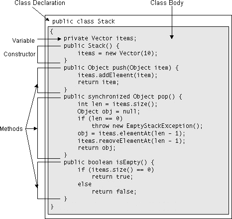

Feedback Form
|
|
Start of Tutorial > Start of Trail > Start of Lesson |
Search
Feedback Form |
Now that we've covered how to create and use objects, and how objects are cleaned up, it's time to show you how to write the classes from which objects are created. This section shows you the main components of a class through a small example that implements a last-in-first-out (LIFO) stack. The following diagram lists the class and identifies the structure of the code. This implementation of a stack uses another object, aVector, to store its elements.Vectoris a growable array of objects and does a nice job of allocating space for new objects as space is required. TheStackclass makes use of this code by using aVectorto store its elements. However, it imposes LIFO restrictions on theVector-- that is, you can only add elements to and remove elements from the top of the stack.
The previous diagram shows that two primary components make up the implementation of a class: the class declaration and the class body. The class declaration declares the name of the class along with other attributes. The class declaration for theStackclass is fairly simple and indicates that the class is public and that its name isStack. Often, a minimal class declaration such as this one is all you'll need.However, the class declaration can say more about the class, such as the name of the superclass and if it can be subclassed.
The class body follows the class declaration and is embedded within curly braces { and }. The class body contains declarations for all instance variables and class variables (known collectively as member variables) for the class. In addition, the class body contains declarations and implementations for all instance methods and class methods (known collectively as methods) for the class.
A class may contain one or more constructors that provide for the initialization of an object created from the class. This section shows you how to write a constructor.
A class's state is represented by its member variables. You declare a class's member variables in the body of the class. Typically, you declare a class's variables before you declare its methods, although this is not required.Note: To declare variables that are members of a class, the declarations must be within the class body, but not within the body of a method. Variables declared within the body of a method are local to that method.classDeclaration { member variable declarations method declarations }
As you know, objects have behavior that is implemented by its methods. Other objects can ask an object to do something by invoking its methods. This section tells you everything you need to know about writing methods for your Java classes. For more information about how to call methods see Using Objects.
In Java, you define a class's methods in the body of the class for which the method implements some behavior. Typically, you declare a class's methods after its variables in the class body although this is not required.
Member variables and methods are known collectively as members. When you declare a member of a Java class, you can allow or disallow other objects of other types access to that member through the use of access specifiers.
A Java class can contain two different types of members: instance members and class members. This page shows you how to declare both types of members and how to use them.
|
|
Start of Tutorial > Start of Trail > Start of Lesson |
Search
Feedback Form |